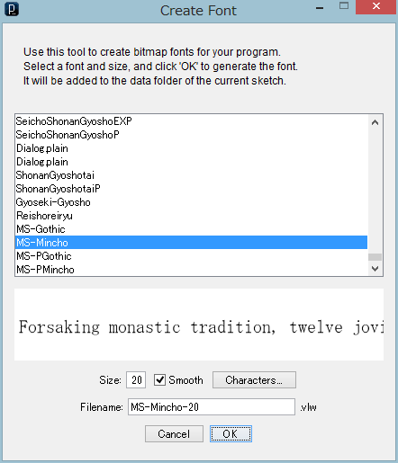
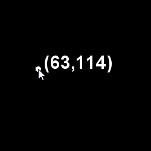

タイポグラフィ
文字(テキスト)を画面ウィンドウに表示するには、text()関数を使いますが、その前に次のどちらかの方法で、フォントデータオブジェクト(PFont)を作っておく必要があります。【1】Processingのフォントフォーマット(vlm形式)を付属ツールで作る方法
- (i)フォントデータファイルを作成(メニューのTools→Create Fontを使う)
- (ii)フォントデータファイルの読み込み、PFontを作る(loadFont()関数を使う)
- (iii)上で作ったPFontを設定(textFont()関数を使う)
【2】True Type Font(ttf形式)またはOpen Type Font(otf形式)のフォントファイルからPFontを作る方法
- (i)フォント名を指定してPFontを作る(createFont()関数を使う)
- (ii)上で作ったPFontを設定(textFont()関数を使う)
【1】の(i) フォントデータファイルの準備
文字を表示する前に、次のようにフォントのデータを作成します。

ProcessingのメニューのTools→Create Fontを選択すると、Create Fontウィンドウが現れます。メニューからフォントファミリーを指定し、サイズを入力、OKボタンを押すと、Filenameの欄に表示された名前のファイル(フォントデータファイル)が自動的に生成されます。このファイルは、Processingで今開いているプログラムのあるフォルダ(スケッチフォルダ)の中の、dataフォルダの中に生成されます。 ProcessingメニューのSketch→Show Sketch Folderを選択すると、現在のプログラムのフォルダが開くので、確認できます。
【1】の(ii)と(iii) フォントデータファイルを読み込み、設定
dataフォルダーに作成されたフォントデータファイルを読み込んで、設定します。- ・loadFont()関数を使って、PFontを作る。
- ・textFont()関数を使って、上で読み込んだフォントデータを設定。
PFontは、Processingがフォントデータを保存するためのクラスです。クラスについては「クラスとオブジェクト」に説明がありますが、ここではプログラムの部品と考えてください。
textFont()関数の引数には、loadFont()関数が生成したPFontオブジェクトを指定します。
【例】textFont(loadFont("Arial-BoldMT-30.vlw"));
"Arial-BoldMT-30.vlw"は、Create Fontツールを使ってdataフォルダに作られたファイル名です。フォントを変更することがなければ、上のように書いてもいいですが、フォントを複数用意しておいて、切り替えて使うような場合は、loadFont()関数が生成するPFontオブジェクトを、いったん変数に保存しておき、それをtextFont()関数の引数に指定します。変数の指定は、通常setup()関数の前に記述し、どの関数にも見える(有効な)ようにします。
【例】PFont myFont; //データ型PFontの変数myFontを宣言そして、setup()関数の中で、PFontオブジェクト生成と、設定を行います。
【例】myFont = loadFont("Arial-BoldMT-30.vlw");
textFont(myFont);
loadFont()関数は、draw()の中で呼出してはいけません。
【2】の(i)と(ii) フォントデータファイルの変換、設定
スケッチフォルダの中の、dataフォルダの中にあるTrue Type Font(ttf形式)またはOpen Type Font(otf形式)のファイルを、Processing用のフォントデータに変換します。もし、dataフォルダにフォントファイルがなければ、コンピュータ(のどこか)にインストールされているttfあるいはotfファイルを探します。- ・createFont()関数を使って、PFontを作る。
- ・textFont()関数を使って、上で読み込んだフォントデータを設定。
【例】myFont = createFont("Arial", 14);
textFont(myFont);
コンピュータで使用可能なフォントの名前を知るには、次の2行を例えばsetup()関数の中に入れて、実行します。フォントの一覧がコンソールに表示されますので、そこにあるフォントの名前を使います。
String[] fontList = PFont.list(); println(fontList);
文字の表示
フォントが設定された後は、text()関数で文字を表示できます。
text( "表示する文字列", x座標, y座標) 【例】 text(10, 20, 100);
text( '表示する文字列' x座標, y座標) 【例】 text('a', 20, 120);
text( 数字, x座標, y座標) 【例】 text("mojimoji", 20, 140);
x座標とy座標の値は、デフォルトでは、文字列左下角の位置を表します。
これはtextAlign()関数を使って変更できます。
textAlign(alignX) textAlign(alignX, alignY)alignXは、水平方向の位置の指定で、LEFT, CENTER, RIGHTのいずれか
alignYは、垂直方向の位置の指定で、TOP, BOTTOM, CENTER, BASELINEのいずれか
また、文字の描画色はfill()関数で変更します。
次の例は、マウスの位置に描いた円の、中央の座標を表示しています。表示する文字列はマウスの位置によって、動的に変化します。

【リスト 文字の表示】
void setup() {
size(250, 250);
textFont(loadFont("Arial-BoldMT-30.vlw"));
fill(255);
}
void draw() {
background(0);
ellipse(mouseX, mouseY, 10, 10);
text("(" + mouseX + "," + mouseY + ")", mouseX + 10, mouseY);
}